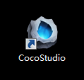
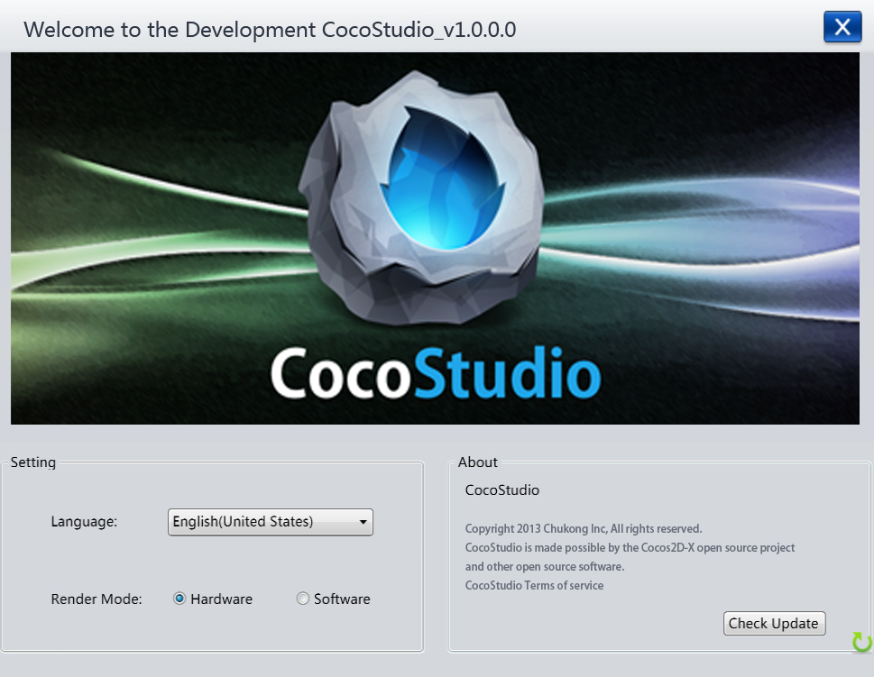

Getting Started
Starting CocoStudio

After installing CocoStudio, a shortcut will appear on your desktop. The shortcut appears as the icon above and is labeled CocoStudio. Click on the shortcut to launch CocoStudio. If the shortcut is missing or invalid, you can go to the installation directory of CocoStudio and click the Cocostudio.exe icon to complete the installation process.
Start Screen
The above picture is the start screen which appears after launching CocoStudio. It contains a logo area, four editor launch buttons and a settings button. The upper half is CocoStudio's logo, and located on the lower half from left to right are the Animation Editor, UI Editor, Scene Editor and Data Editor. On the bottom right of the screen, there is a gear icon which represents Settings. If you click the gear icon, you will see the following result:

The Settings screen have two sections, Settings and About.
Settings
Language
CocoStudio supports Chinese and English. You can choose your preference from the drop-down menu item.
Render Mode
CocoStudio supports hardware and software rendering modes. The hardware rendering mode supports faster animation, while the software rendering mode is more stable. You can customize these modes as your preferences.
Note that changing the rendering mode is not always valid and requires system environment support. If the display area turn black when the Hardware rendering mode is activated, your operating system may not support the Hardware rendering mode. Select the Software option to return to the Software rendering mode.
About
About CocoStudio
About the law, copyright of CocoStudio.
Check Update
Clicking the Check Update button launches the software update functionality. Click on the button to verify that you have the latest version of CocoStudio installed.